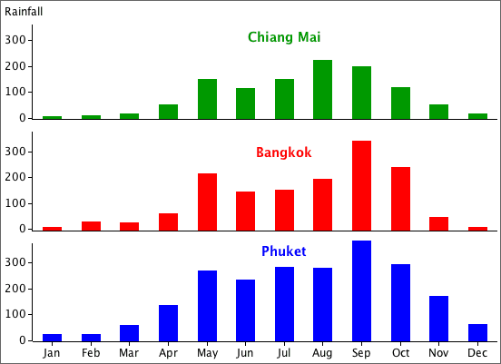

Grouped data are often displayed graphically with a separate bar chart for each group.
Example
The following table shows average monthly rainfall in three cities in Thailand.
| Jan | Feb | Mar | Apr | May | Jun | Jul | Aug | Sep | Oct | Nov | Dec | Year | |
|---|---|---|---|---|---|---|---|---|---|---|---|---|---|
| Phuket | 23.3 | 25.8 | 59.0 | 137.8 | 269.8 | 236.9 | 284.1 | 282.8 | 386.5 | 295.9 | 173.7 | 61.9 | 2,237.5 |
| Bangkok | 9.0 | 30.0 | 29.0 | 65.0 | 220.0 | 149.0 | 155.0 | 197.0 | 344.0 | 242.0 | 48.0 | 10.0 | 1,498.0 |
| Chiang Mai | 7.7 | 9.2 | 19.2 | 54.1 | 153.0 | 117.3 | 153.2 | 224.6 | 200.2 | 118.1 | 51.3 | 18.3 | 1,126.2 |
The distribution of rainfall throughout the year can be compared with the bar charts below.
